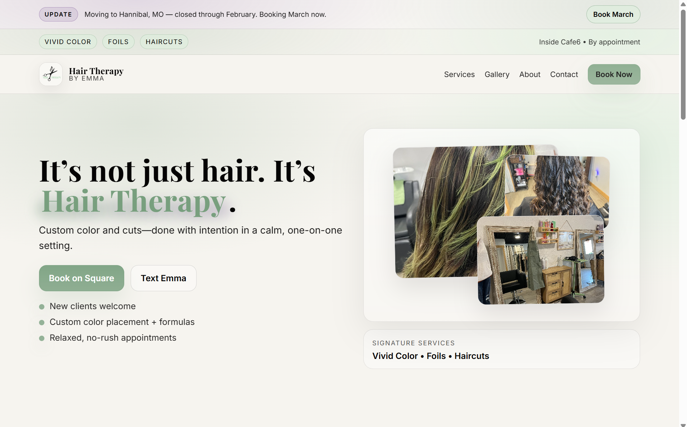

Track one call source
Focuses on one inbound call source so the measurement stays clear and manageable.
For many home-service businesses, inbound calls are a major part of how new work gets booked. But during busy hours, after-hours windows, or overloaded days, some calls get missed, delayed, or never properly followed up.
The problem is not just a missed ring. The problem is that without clear measurement, you do not know how often it is happening, when it is happening, or where opportunity may be slipping by.
The first step is not guessing. The first step is getting a clean baseline.
This is a focused baseline measurement offer designed to help you see what is happening before you make bigger changes.
Focuses on one inbound call source so the measurement stays clear and manageable.
Establishes a simple baseline around what is being answered and what is not.
Looks for visible patterns in when missed calls appear to cluster.
Organizes the results into a clean report you can actually understand.
Delivers a practical blueprint for tightening call handling and follow-up.
This is not a bloated software rollout. It is a straightforward diagnostic starting point.
We confirm fit, choose the call source to track, and get the baseline process started.
Your selected call source is monitored over the next 7 days so missed-call patterns can be measured clearly.
At the end of the window, you receive a clear summary of the findings along with practical next-step recommendations.
The goal is clarity, not complexity.
A clear summary of tracked call activity across the 7-day window.
A simple view into where missed calls appear to cluster during the week.
No jargon. Just a straightforward explanation of what the data appears to show.
Practical recommendations for tightening call handling and follow-up.
Best for businesses where inbound phone calls matter to revenue.
No long-term contract. No bloated package. Just a clear starting point.
Book a Setup Call
I’m Charlie Evans, founder of Praxis Systems. I built Praxis around a simple idea: useful systems should make business operations clearer, tighter, and easier to act on.
Right now, that means helping local service businesses get visibility into missed-call patterns before money slips by unnoticed. The goal is not to sell bloated packages or vague agency talk. The goal is to find the bottleneck, measure it clearly, and give you a practical next step.
Praxis is built for owners who value straightforward thinking, practical execution, and real operational improvement.
While Praxis is currently focused on practical revenue and follow-up systems, real business owners have already trusted me to improve key parts of their digital presence and customer experience.

Selected client work
Website design and build for a local business owner who wanted a cleaner, more professional online presence.
“Praxis Systems created a platform for me to expand my business to a wider range of people and made me accessible with a quick search. I'm so grateful for what we've created by putting our heads together! And they continue expanding every day by tracking activity to see what works and what doesn't.”
The baseline tracks one inbound call source over a 7-day window so missed-call activity can be measured clearly.
The baseline is designed to stay simple. Exact setup depends on your current workflow, but the goal is to keep the process straightforward.
No. This offer is the measurement baseline first. It helps you understand the pattern before deciding on a bigger solution.
It is best for home-service and local service businesses where inbound phone calls play a major role in booking work.
You receive the report, the findings, and a next-step blueprint so you can see what needs tightening.
No long-term contract for the baseline offer.
If calls matter to your business, the first step is seeing the pattern clearly.